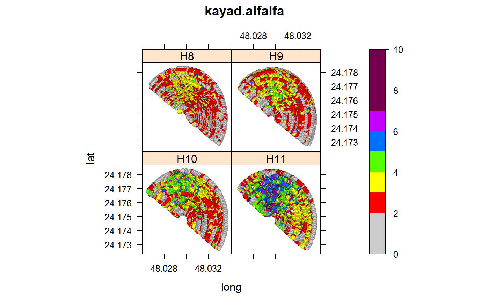

kayad.alfalfa.RdYield monitor data for 4 cuttings of alfalfa in Saudi Arabia.
data("kayad.alfalfa")
A data frame with 8628 observations on the following 4 variables.
harvestharvest number
latlatitude
longlongitude
yieldyield, tons/ha
Data was collected from a 23.5 ha field of alfalfa in Saudia Arabia. The field was harvested four consecutive times (H8 = 5 Dec 2013, H9 = 16 Feb 2014, H10 = 2 Apr 2014, H11 = 6 May 2014). Data were collected using a geo-referenced yield monitor. Supporting information contains yield monitor data for 4 hay harvests on a center-pivot field.
# TODO: Normalize the yields for each harvest, then average together # to create a productivity map. Two ways to normalize: # Normalize to 0-100: ((mapValue - min) * 100) / (max - min) # Standardize: ((mapValue - mean) / stdev) * 100
Ahmed G. Kayad, et al. (2016). Assessing the Spatial Variability of Alfalfa Yield Using Satellite Imagery and Ground-Based Data. PLOS One, 11(6). https://doi.org/10.1371/journal.pone.0157166
None
# \dontrun{ library(agridat) data(kayad.alfalfa) dat <- kayad.alfalfa # match Kayad table 1 stats libs(dplyr)#> #>#> #> #>#> #> #>#> #> #>#> #> #>dat <- group_by(harvest)#> Error in group_by(harvest): object 'harvest' not found#> min max mean stdev var #> 1 0 9.95764 3.015158 1.495858 2.237591# Figure 4 of Kayad libs(latticeExtra) catcols <- c("#cccccc","#ff0000","#ffff00","#55ff00","#0070ff","#c500ff","#73004c") levelplot(yield ~ long*lat |harvest, dat, aspect=1, at = c(0,2,3,4,5,6,7,10), col.regions=catcols, main="kayad.alfalfa", prepanel=prepanel.default.xyplot, panel=panel.levelplot.points)# Similar to Kayad fig 5. ## levelplot(yield ~ long*lat |harvest, dat, ## prepanel=prepanel.default.xyplot, ## panel=panel.levelplot.points, ## col.regions=pals::brewer.reds) # }